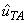

|
2.2 Action of a Linear Polarizer Consider a plane wave of light traveling in the positive z-direction and incident upon a linear polarizer which occupies the plane z = constant. Let the incident electric field vector in this field be denoted by Ei(z, t) and the direction of the transmission axis of the polarizer by specified by the unit vector . The
action of the linear polarizer is depicted in Fig. 18.
Here the incident field is decomposed into two orthogonal components: a
component (the blue vector) parallel to the TA of the polarizer and a component
(the red one) which is perpendicular to the TA. The polarizer transmits the
former and absorbs the latter. Therefore the transmitted electric field (the
field exiting the polarizer), call it Et(z, t) is given by the
formula
where is a unit vector in the direction of the TA of the polarizer. It follows it follows directly from Eq.(2.1) that the transmitted light is always linearly polarized in the direction of the TA of the polarizer.
|
||||||
| Polarization: Theory |